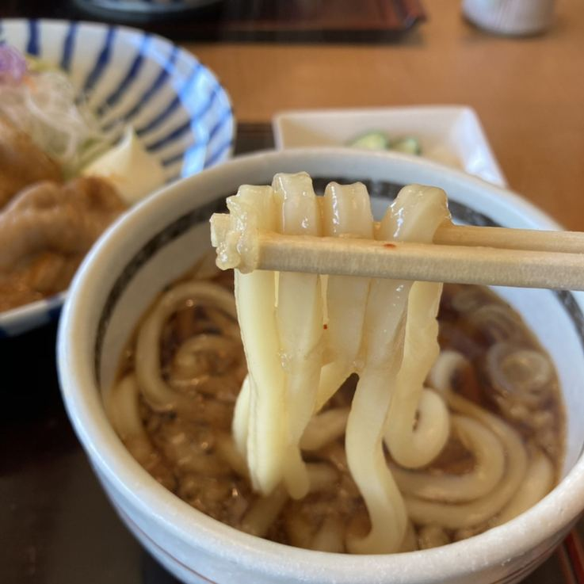
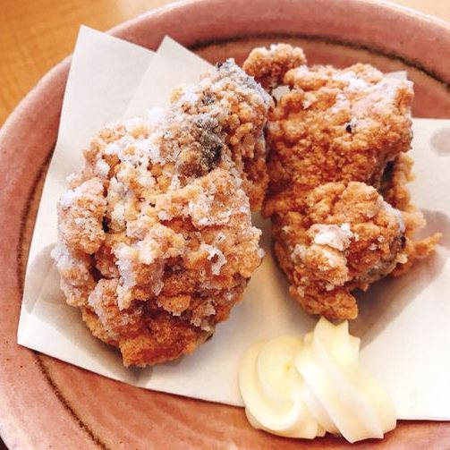
足で踏んでコシを出し、一晩寝かせた自打ちの麺。
一番人気は、鳥の唐揚げです。
駐車場がございます。／現金・各種カード・電子マネー・PayPay がお使いいただけます。
昼は11時から14時半まで、夜は17時から21時までお店を開けております。定休日は毎週月曜日と、隔週の火曜日です。
お休みをいただく日は月によって変わりますので、その月の営業日カレンダーを Instagram に掲げております。お出かけの前にご覧いただけますと確かです。お電話でもお答えいたします。
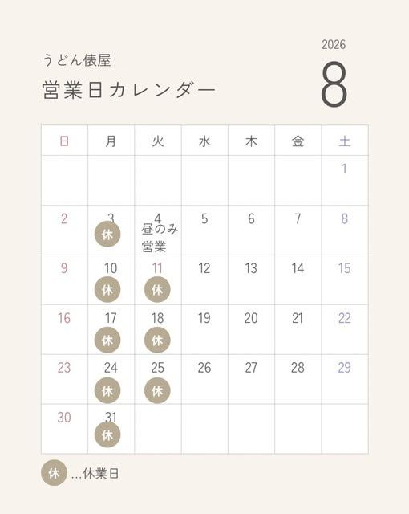
2026年8月の営業日カレンダー。当月ぶんは @udontawaraya に掲げております。
| 営業時間 | 11:00〜14:30 17:00〜21:00 |
|---|---|
| 定休日 | 毎週月曜日／隔週の火曜日 お休みの日は月ごとに変わります。その月の営業日カレンダーを Instagram に掲げております。 |
| ランチ | ランチタイム（11:00〜14:30）は、うどんの大盛りを無料でお付けします |
| 駐車場 | ございます |
| お支払い | 現金・各種カード・電子マネー QRコード決済（PayPay） |
| @udontawaraya 営業日カレンダーとお知らせを載せております。 |
いちばん多くご注文をいただくのは、鳥の唐揚げです。一つを大きめに切り、ご注文をいただいてから揚げてお出しします。
単品でも、ごはんとうどんの付いたお膳でもお召し上がりいただけます。お持ち帰りもお受けしております。
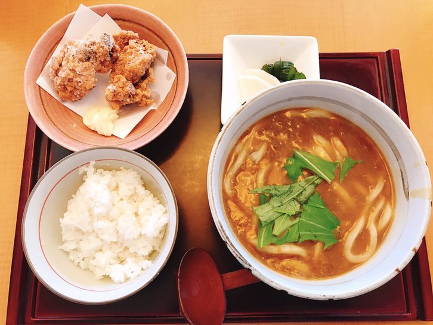
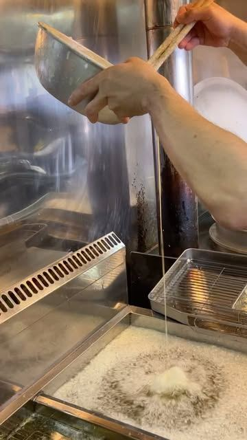
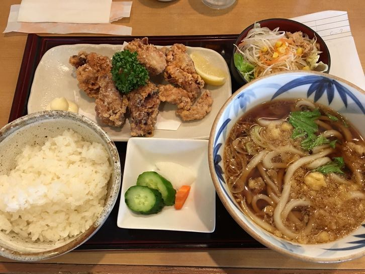
麺は店で打っております。良質の小麦粉を足で踏んでコシを出し、一晩寝かせてから切り出します。つるりとした喉ごしと、しこしことした噛みごたえ。当店ではこれを「つるしこめん」と呼んでおります。
だしは北海道 羅臼産の昆布と、高知産三種の節でひいております。添加物は使っておりません。温かいおうどんも、冷たいおうどんも、この一つのだしから仕立てます。
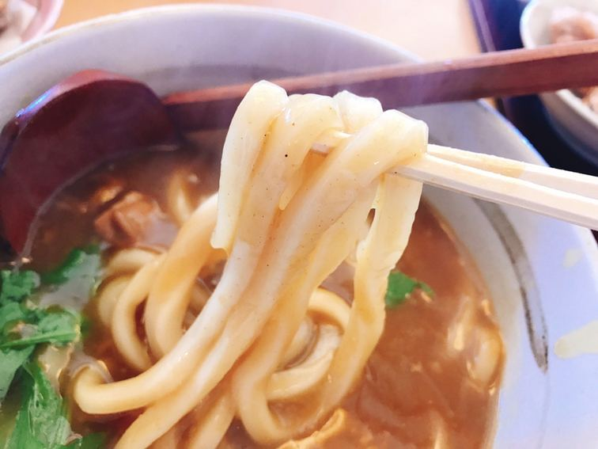
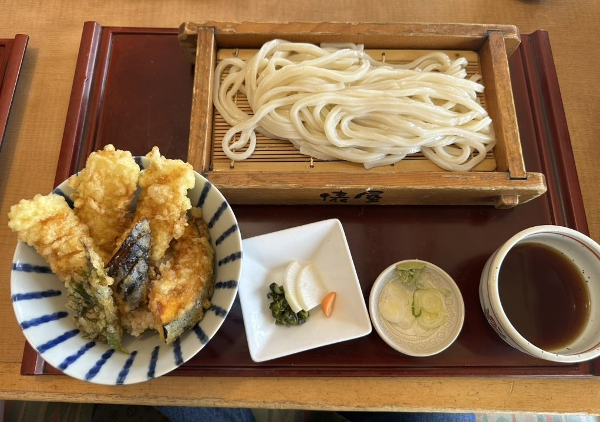
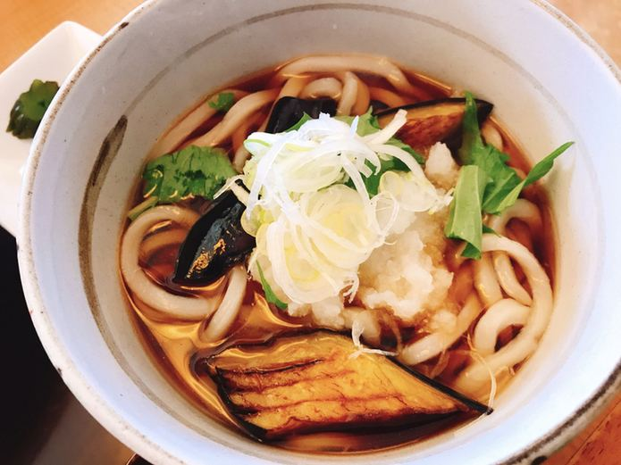
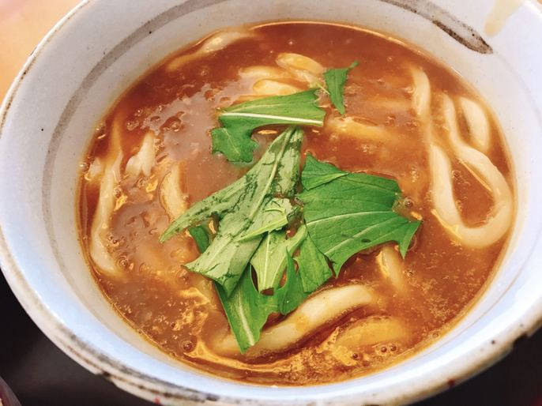
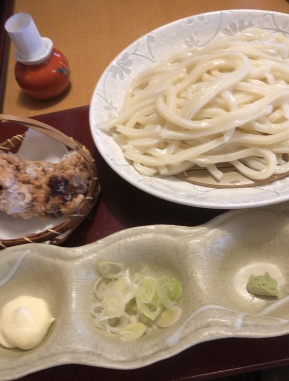
お膳は、うどんとごはん、主菜と小鉢を一枚のお盆にのせてお出ししております。日によって組み合わせを変えてご用意する日もございます。
うどんだけでなく、定食やどんぶり、おつまみとお酒もご用意しております。
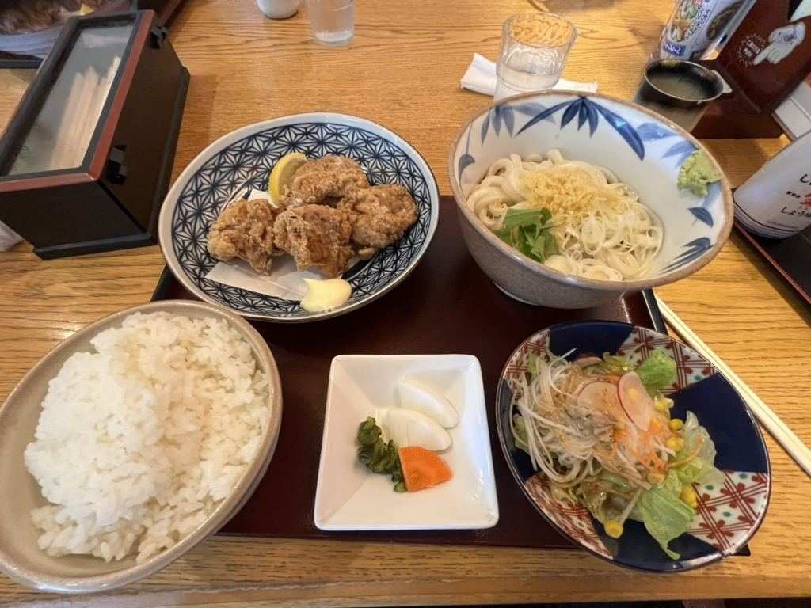
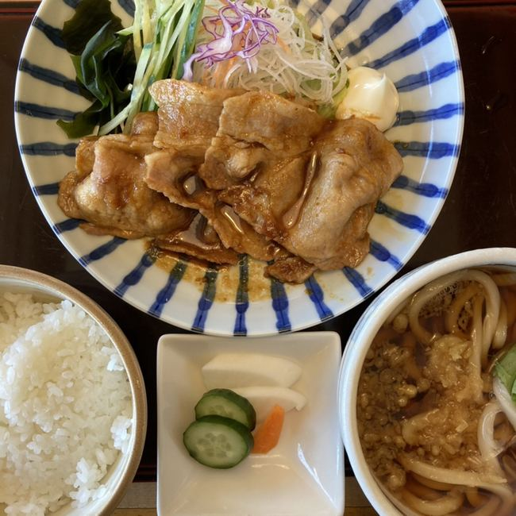
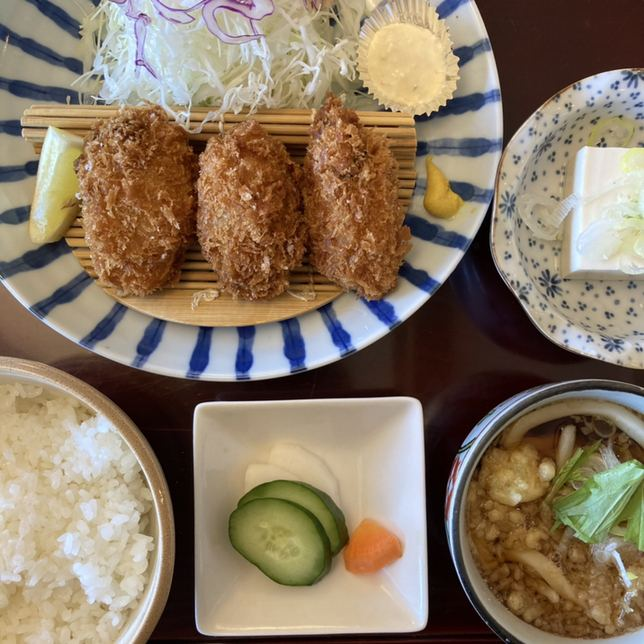
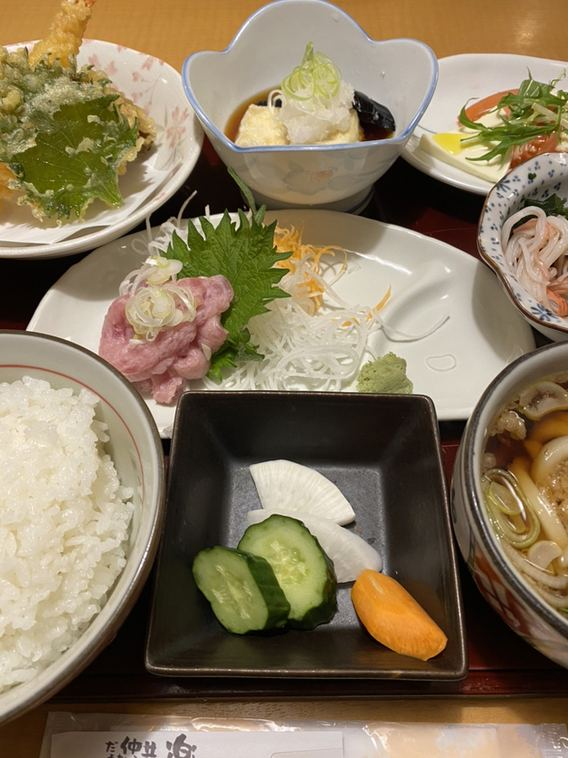
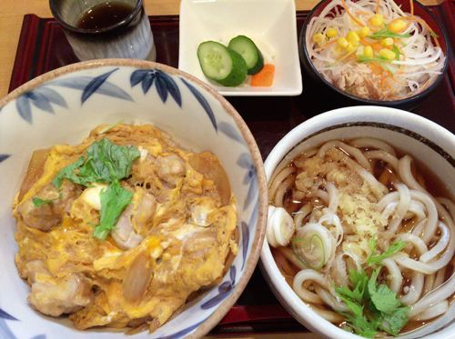
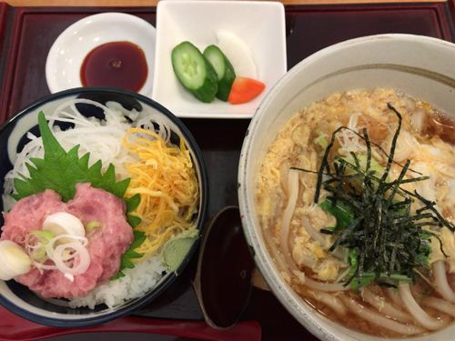
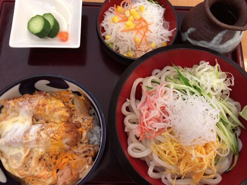
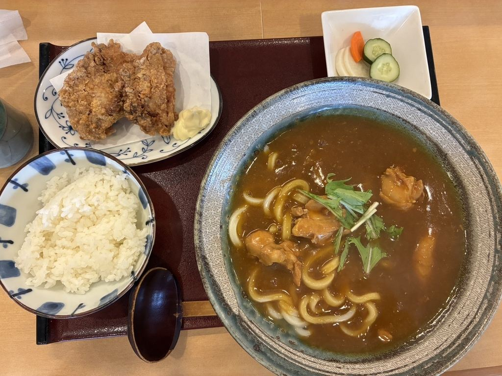
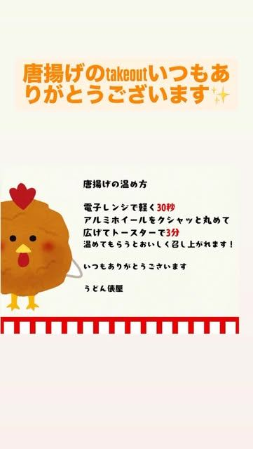
鳥の唐揚げはお持ち帰りをお受けしております。お電話でご注文をいただけますと、お待たせせずにお渡しできます。
お家での温め直し方をご案内しております。電子レンジで30秒ほど温めたあと、アルミホイルをクシャッと丸めてから広げ、その上にのせてトースターで3分。衣がもう一度立ちます。
カウンター席、テーブル席、ソファー席をご用意しております。お一人でも、ご家族でも、お仕事の合間にもお使いいただけます。
駐車場がございますので、お車でお越しください。
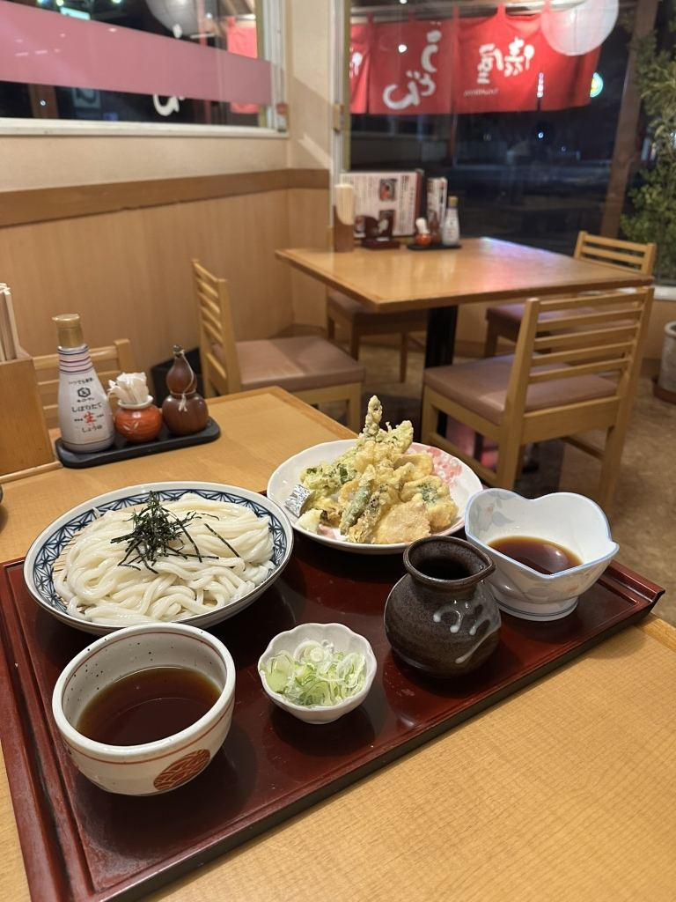
なんといっても唐揚げが美味しくて、一個が大きめで食べ応えのある唐揚げがおすすめです
お客様の声より
やはり「うどん」がメインなので、手打ちのうどんはツルツル食感がたまらなく、コシもしっかりあり旨い
お客様の声より
駐車場が広く停めやすい。店内もキレイで雰囲気が良い
お客様の声より
| 住所 | 〒306-0051 茨城県古河市茶屋新田50-4 |
|---|---|
| 電話 | 0280-48-6611 |
| 営業時間 | 11:00〜14:30 17:00〜21:00 |
| 定休日 | 毎週月曜日／隔週の火曜日 お休みの日は月ごとに変わります。その月の営業日カレンダーを Instagram に掲げております。 |
| お席 | カウンター・テーブル・ソファー席 |
| 駐車場 | ございます |
| お支払い | 現金・各種カード・電子マネー QRコード決済（PayPay） |
| @udontawaraya |